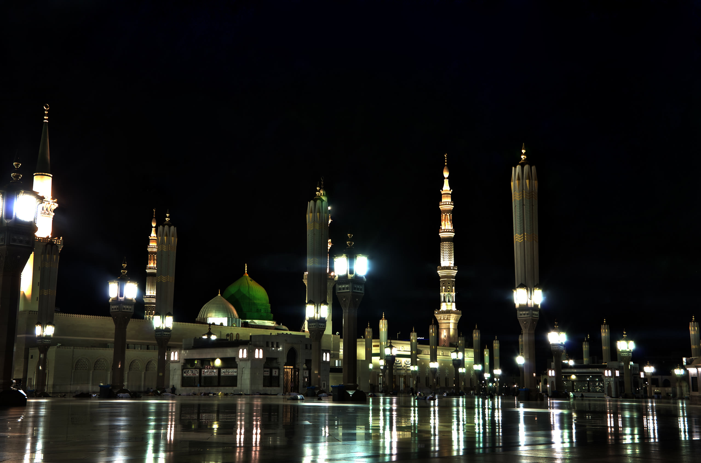
MAS Sacramento
مِنْ رِحَابِ المَسْجِدِ النَّبَوِيِّ
إِلَى قُلُوبِ أَبْنَائِنَا فِي أَمْرِيكَا
إِلَى قُلُوبِ أَبْنَائِنَا فِي أَمْرِيكَا
From the Prophet’s Mosque
to the Hearts of Our Children in America
to the Hearts of Our Children in America
د. محمد إبراهيم عناني عطية
Dr. Mohamed Attia
Chapter I · The Beginning
ما الذي أحمله معي
من المدينة المنورة؟
من المدينة المنورة؟
What do I carry from Madinah
to this community?
to this community?
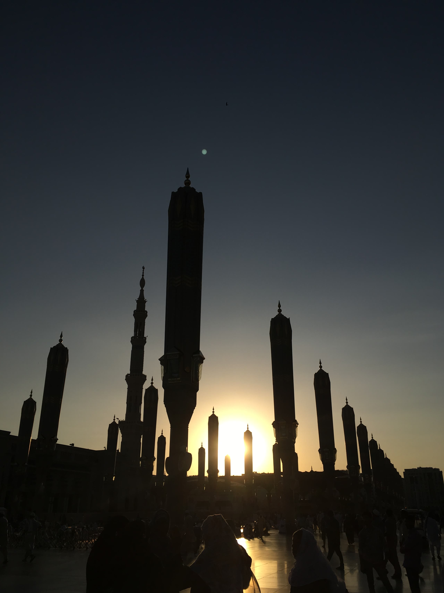
Chapter II · The Journey of Knowledge
طفلٌ لم يتجاوز ستةَ أشهر… نشأ في المدينة
Six months old — and raised in Madinah
﴿وَمَا بِكُم مِّن نِّعْمَةٍ فَمِنَ اللَّهِ﴾
[النحل: ٥٣]
لا نريد أن نُخرِّج أطفالًا يحفظون القرآن بألسنتهم فقط…
نريد جيلًا يحمل القرآن في قلبه
ويظهر أثرُه في سلوكه
ويظهر أثرُه في سلوكه
A generation that carries the Qur’an in its heart
— and lives it.
— and lives it.
The Journey of Knowledge
A Journey That Began in Madinah
رحلةٌ بدأت في المدينة
6 mo.
النشأة في المدينة
Growing up in Madinah
2015
الإقراء في المسجد النبوي
Teaching at the Prophet’s Mosque — to this day
2016
البكالوريوس
B.A., College of the Holy Qur’an
2018
الماجستير في القراءات
M.A. in the Qira’at
2021
الدكتوراه في القراءات
Ph.D. in the Qira’at
Now
ساكرامنتو
A new chapter
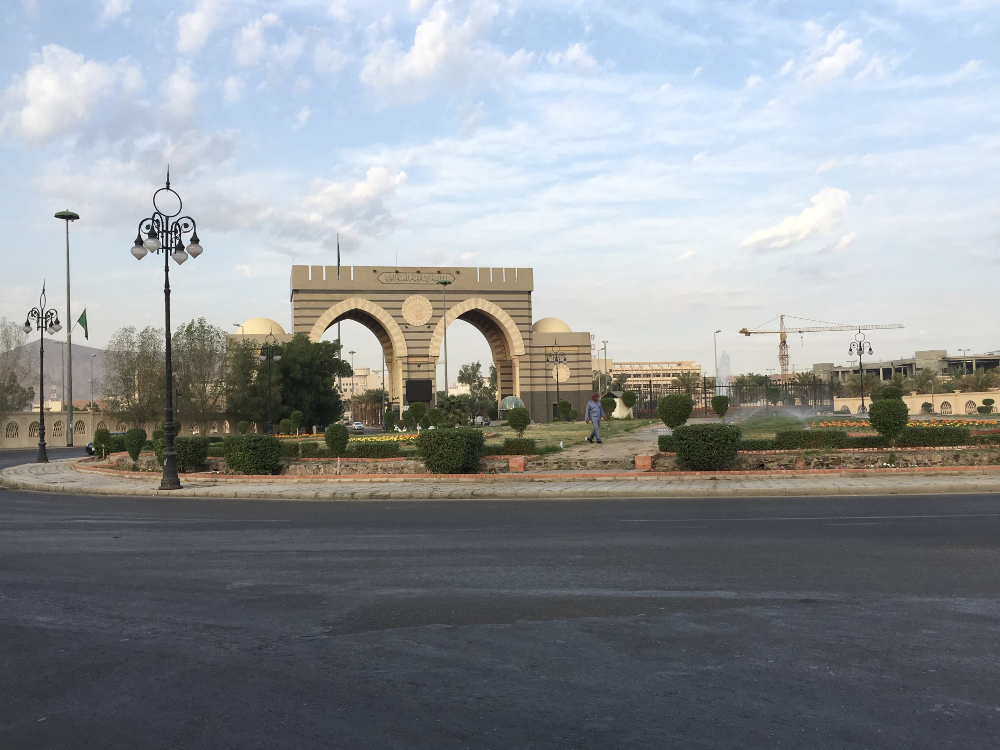
College of the Holy Qur’an
The Islamic University
of Madinah
of Madinah
الجامعة الإسلامية
بالمدينة المنورة
بالمدينة المنورة
كلية القرآن الكريم · قسم القراءات
The Science of Qira’at
علمٌ قائمٌ على
التلقي والمشافهة والإسناد
التلقي والمشافهة والإسناد
Received by hearing.
Passed on by reciting.
Linked by an unbroken chain.
Passed on by reciting.
Linked by an unbroken chain.
النبي ﷺ
الصحابة · القرّاء · العلماء
الشيخ ← تلميذه
… جيلًا بعد جيل
﴿إِنَّا نَحْنُ نَزَّلْنَا الذِّكْرَ وَإِنَّا لَهُ لَحَافِظُونَ﴾
[الحجر: ٩]
“Indeed, it is We who sent down the Reminder, and indeed, We will be its guardian.”
The Scholars Who Shaped My Journey
My Teachers
مشايخي
إ
الشيخ إبراهيم الأخضر
شيخ قرّاء المدينة المنورة
Sheikh Ibrahim Al-Akhdar
ك
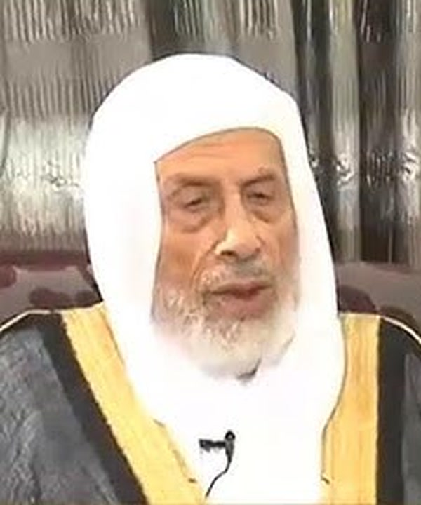
الشيخ محمد كُرَيِّم راجح
شيخ قرّاء الشام
Sheikh Muhammad Kuraim Rajih
إ
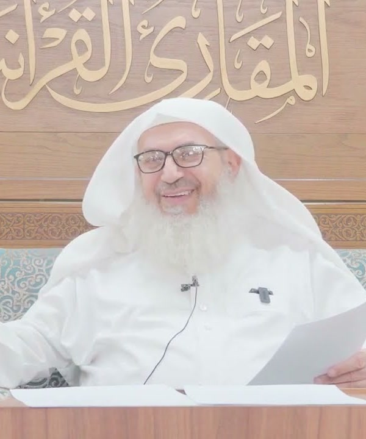
الشيخ إيهاب فكري
المقرئ بالقراءات العشر بالمسجد النبوي
Sheikh Ihab Fikri
إتقانُ العلم
Mastery
وحُسنُ التعامل
Mercy
العلم دون رحمة قد يتحول إلى قسوة… والرحمة دون علم لا تؤدي للطالب حقه
Knowledge without mercy can turn into harshness; mercy without knowledge falls short.
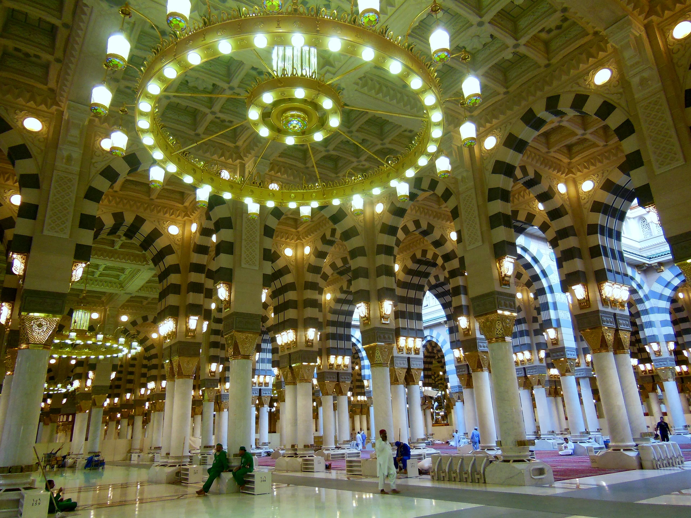
Chapter III · At the Prophet’s Mosque
تخيّلوا معي هذا المشهد
AsiaAfricaEuropeAmerica
تختلف ألوانهم ولغاتهم… ويجتمعون على محبة القرآن
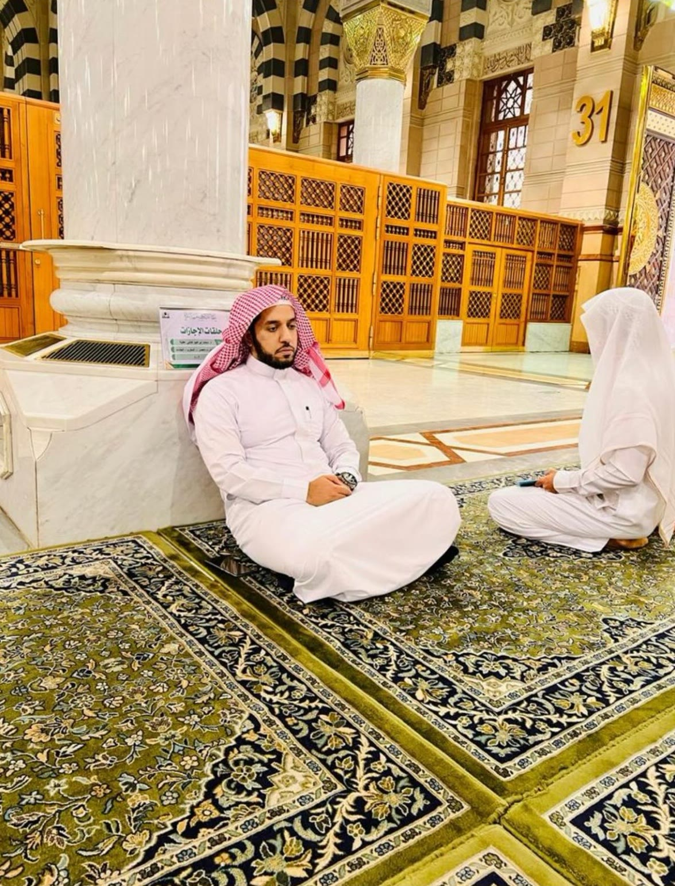
Al-Masjid an-Nabawi · Since 2015
أمانة… وشرف… ومسؤولية
A Trust. An Honor. A Lifelong Responsibility.
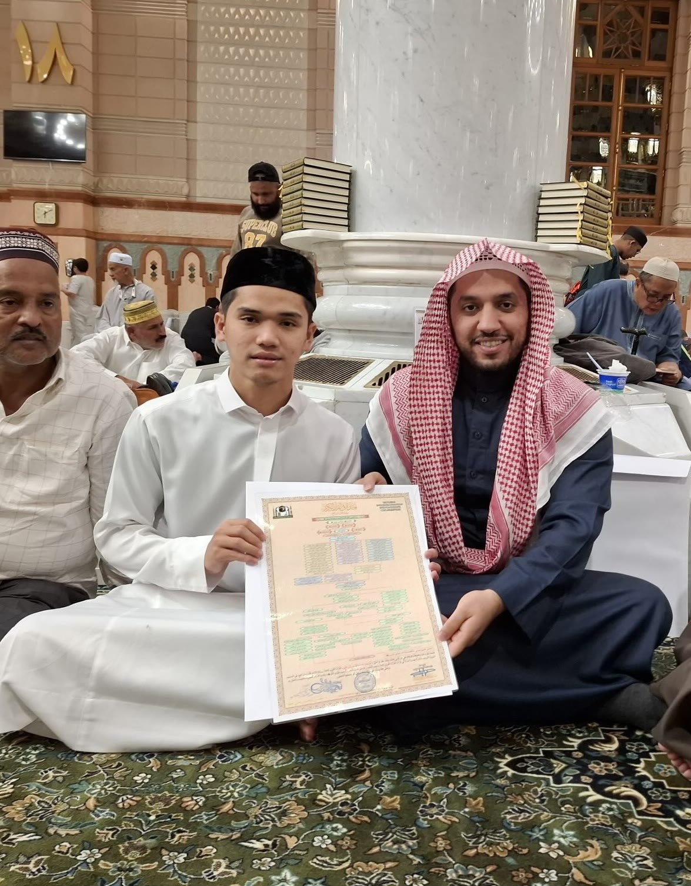
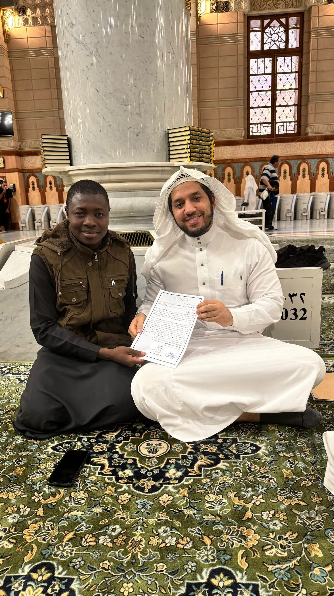
القرآن يجمع الناس قبل أن تجمعهم اللغات
The Qur’an brings people together before languages do
«خَيْرُكُمْ مَنْ تَعَلَّمَ الْقُرْآنَ وَعَلَّمَهُ»
رواه البخاري
“The best of you are those who learn the Qur’an and teach it.”
طالبٌ واحد اليوم… معلّمٌ لعشرة غدًا… وأثرٌ يمتد إلى من لم تَرَهم
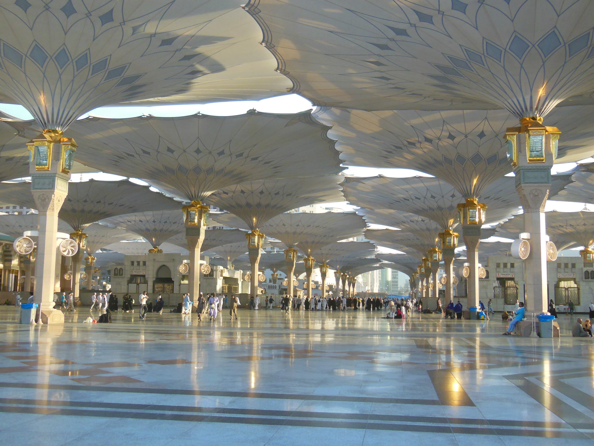
Chapter IV · A Legacy Beyond Borders
معلّمٌ واحد. رحلاتٌ كثيرة. قرآنٌ واحد.
One Teacher. Many Journeys. One Qur’an.
Film
From Madinah to the World — in production
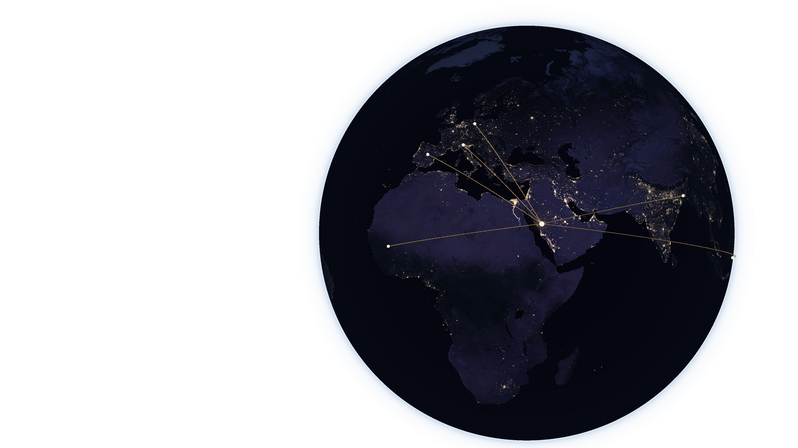
القرآن يجمع القلوب
عبر القارات
عبر القارات
The Qur’an Connects Hearts Across Continents
Chapter V · More Than Memorization
طفلٌ في السابعة… وأول يومٍ في الحلقة
غضبٌ وإحراج
يخاف من الخطأ… ومن الحلقة
He leaves afraid of making mistakes
«أحسنت يا بني… لنحاول معًا»
يحب أن يعود غدًا
He can’t wait to come back tomorrow
﴿فَبِمَا رَحْمَةٍ مِّنَ اللَّهِ لِنتَ لَهُمْ وَلَوْ كُنتَ فَظًّا غَلِيظَ الْقَلْبِ لَانفَضُّوا مِنْ حَوْلِكَ﴾
[آل عمران: ١٥٩]
نحفظ القرآن، ونفهم القرآن، ونعيش مع القرآن
نحفظ
Memorize
نتلو بإتقان
Recite
نفهم
Understand
نعمل به
Live by It
The Qur’an in a Child’s Daily Life
﴿وَقُولُوا لِلنَّاسِ حُسْنًا﴾
[البقرة: ٨٣]
“And speak to people kindly.”
في المدرسة؟
With a classmate
مع أمي وأبي؟
With my parents
مع أخي الصغير؟
With my little brother
Teaching the Qur’an in America
Authentic Knowledge · Flexible Teaching
الأصالة في العلم
والمرونة في التعليم
والمرونة في التعليم
التلقي الأصيل
Authentic Qur’anic transmission
وسائل حديثة
Modern teaching methods
تعليم بلغتين
Bilingual learning
متابعة كل طالب
Personal progress for every student
“Listen carefully, and repeat after me.”“Good try! Let’s practice together.”“Excellent!”
Surah Al-‘Asr · A Moment Together
﴿وَالْعَصْرِ ١ إِنَّ الْإِنسَانَ لَفِي خُسْرٍ ٢
إِلَّا الَّذِينَ آمَنُوا وَعَمِلُوا الصَّالِحَاتِ وَتَوَاصَوْا بِالْحَقِّ وَتَوَاصَوْا بِالصَّبْرِ ٣﴾
إِلَّا الَّذِينَ آمَنُوا وَعَمِلُوا الصَّالِحَاتِ وَتَوَاصَوْا بِالْحَقِّ وَتَوَاصَوْا بِالصَّبْرِ ٣﴾
[العصر: ١–٣]
الإيمان
Faith
العمل الصالح
Good Deeds
التواصي بالحق
Truth
التواصي بالصبر
Patience
Chapter VI · Our Vision
A Qur’anic Journey for Every Student
رحلة قرآنية لكل طالب
التأسيس
Foundations — letters & correct reading
الحفظ والمراجعة
Memorization, review & tajweed
الإتقان
Mastery & refinement
القراءات والإجازة
Qira’at & ijazah, for those ready
ولا تخجل أبدًا أن تبدأ في أي عمر
Adults are welcome — it is never too late to begin.
حلمي ألّا نكتفي بأن نقول: لدينا حلقة قرآن ناجحة…
بل حلقةٌ أخرجت معلّمين وحفّاظًا
يخدمون القرآن في أمريكا وخارجها
يخدمون القرآن في أمريكا وخارجها
Preparing Tomorrow’s Qur’an Teachers
To Every Father and Mother
Parents as Partners
الآباء والأمهات شركاء
10
دقائق يوميًا في البيت
minutes a day at home
استمعوا
إلى ما حفظوه
Listen to them recite
شجّعوا
الجهد قبل الدرجة
Praise effort, not only scores
لا تقارنوا
لكل طفل قدرته
Every child at their own pace
﴿إِنَّ هَـٰذَا الْقُرْآنَ يَهْدِي لِلَّتِي هِيَ أَقْوَمُ﴾
[الإسراء: ٩]
To Our Sons and Daughters
أبنائي وبناتي… ثلاثة أشياء
أحبّوا القرآن
Love it
اجتهدوا فيه
Work at it
لا تستسلموا
Never give up
«الْمَاهِرُ بِالْقُرْآنِ مَعَ السَّفَرَةِ الْكِرَامِ الْبَرَرَةِ، وَالَّذِي يَقْرَأُ الْقُرْآنَ وَيَتَتَعْتَعُ فِيهِ وَهُوَ عَلَيْهِ شَاقٌّ لَهُ أَجْرَانِ»
متفق عليه
The one who struggles with the Qur’an receives a double reward.
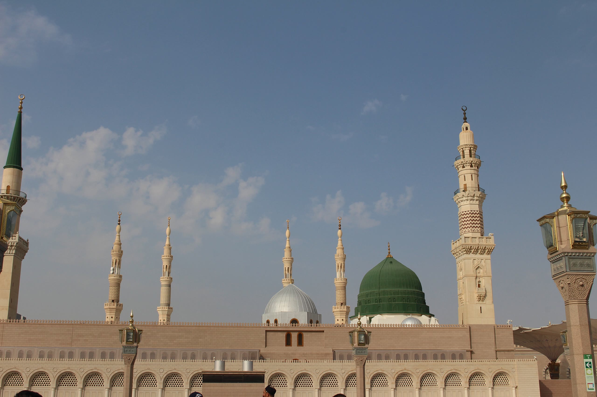
From Madinah to the World
لا نصنع نسخةً شكلية… بل ننقل القيم
تعظيم القرآن
REVERENCE
الإتقان
MASTERY
الاحترام
RESPECT
الرحمة
MERCY
الصبر
PATIENCE
المداومة
CONSISTENCY
الفرح بالتقدم
JOY
A Covenant Between Us
عهدٌ بيننا
الأسرة
FAMILY
المعلّم
TEACHER
المسجد
MASJID
المجتمع
COMMUNITY
نجاحٌ لا يُنسب إلى شخص واحد
A success that belongs to all of us.

لا نستطيع أن ننقل جدران المسجد النبوي إلى هنا…
ولكننا نستطيع بإذن الله أن ننقل
بعضًا من قيم التعليم القرآني التي تعلّمناها في رحابه
بعضًا من قيم التعليم القرآني التي تعلّمناها في رحابه
We cannot bring the walls of the Prophet’s Mosque to America —
but we can carry forward the values of Qur’anic education
we learned within its walls.
but we can carry forward the values of Qur’anic education
we learned within its walls.
رحلتنا تبدأ معًا
Our Journey Begins Together
Credits
Photographs of Al-Masjid an-Nabawi and the Islamic University of Madinah via Wikimedia Commons:
Wajahat Mahmood (CC BY-SA 2.0) · Cognitive137 (CC BY 4.0) · King Eliot (CC BY-SA 4.0) · TheHadiRahim (CC0) · AhmedA1995 (CC BY-SA 4.0)
Earth imagery: NASA Earth Observatory (public domain) · Qur’an text: Tanzil.net (verbatim)
Fonts: Amiri, Cormorant Garamond, Inter (SIL Open Font License)
Personal photographs and student testimonials: Dr. Mohamed Attia and his students
Wajahat Mahmood (CC BY-SA 2.0) · Cognitive137 (CC BY 4.0) · King Eliot (CC BY-SA 4.0) · TheHadiRahim (CC0) · AhmedA1995 (CC BY-SA 4.0)
Earth imagery: NASA Earth Observatory (public domain) · Qur’an text: Tanzil.net (verbatim)
Fonts: Amiri, Cormorant Garamond, Inter (SIL Open Font License)
Personal photographs and student testimonials: Dr. Mohamed Attia and his students